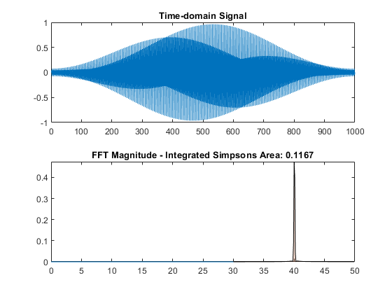

function main_function()
TIMESTEP = 0.01;
NUMSAMPLES = 1000;
MOD_FREQ_HZ = 40;
CHANNEL_SEPARATION_HZ = 40;
signal = generate_signal(TIMESTEP, NUMSAMPLES);
visualize_signal_and_fft_simpsons(signal, TIMESTEP, MOD_FREQ_HZ, CHANNEL_SEPARATION_HZ);
end
function signal = generate_signal(timestep, numsamples)
t = linspace(0, numsamples*timestep, numsamples);
windowed_signal = sin(40.0 * 2.0 * pi * t) .* hamming(numsamples).';
signal = windowed_signal;
end
function [xf, yf] = fft_calculate(data, timestep)
yf = abs(fft(data));
numsamples = length(data);
freq = 0:1/timestep/numsamples:1/timestep - 1/timestep/numsamples;
xf = freq(1:numsamples/2);
yf = yf(1:numsamples/2) * 2.0 / numsamples;
end
function [idx, nearestValue] = find_nearest(array, value)
[~, idx] = min(abs(array - value));
nearestValue = array(idx);
end
function result = simpsons_integration(xf, yf, idx_start, idx_stop)
n = idx_stop - idx_start;
if mod(n, 2) == 0
error('Number of intervals should be even for Simpson''s rule.');
end
h = (xf(idx_stop) - xf(idx_start)) / n;
result = 0;
for i = 0:n
y = yf(idx_start + i);
if i == 0 || i == n
result = result + y;
elseif mod(i, 2) == 0
result = result + 2*y;
else
result = result + 4*y;
end
end
result = result * h/3;
end
function visualize_signal_and_fft_simpsons(signal, timestep, mod_freq_hz, channel_separation_hz)
[xf, yf] = fft_calculate(signal, timestep);
freq_start = mod_freq_hz - channel_separation_hz / 2;
freq_stop = mod_freq_hz + channel_separation_hz / 2;
[idx_start, ~] = find_nearest(xf, freq_start);
[idx_stop, ~] = find_nearest(xf, freq_stop);
if mod(idx_stop - idx_start, 2) == 0
idx_stop = idx_stop + 1;
end
integrated_area = simpsons_integration(xf, yf, idx_start, idx_stop);
subplot(2, 1, 1);
plot(signal);
title('Time-domain Signal');
subplot(2, 1, 2);
plot(xf, yf);
hold on;
freq_start = mod_freq_hz - (channel_separation_hz * 0.25);
freq_stop = mod_freq_hz + (channel_separation_hz * 0.25);
[idx_start, ~] = find_nearest(xf, freq_start);
[idx_stop, ~] = find_nearest(xf, freq_stop);
area(xf(idx_start:idx_stop), yf(idx_start:idx_stop), 'FaceAlpha', 0.2);
title(['FFT Magnitude - Integrated Simpsons Area: ', num2str(integrated_area, '%.4f')]);
hold off;
end
